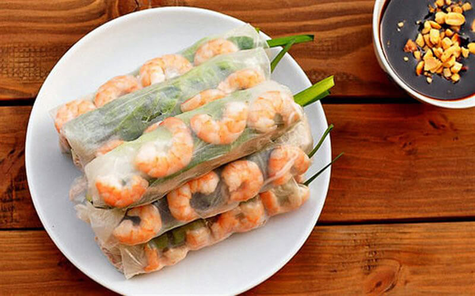

Ingredients:
- Rice paper
- Boiled Pork
- Boiled Shrimp
- 1 bunch of cooked vermicelli rice noodles
- Lettuce
- Cucumber
- Mint Leaves
- Peanut Butter
- Hoison Sauce
- Ketchup
- Water
- Crushed Peanuts
- Slice the boiled pork up into thin slices. Slice the boiled shrimp vertically in half. Thinly slice the cucumber up into 3 inch long vertical strips.
- Fill a bowl up with warm water. Dip the rice paper into the warm water and pull it out right away. Put the rice paper onto a plate. Arrange lettuce leaves on one end of the rice paper. Put a few mint leaves and cucumbers on top of the lettuce. Then, put a small handful of noodles on top of that. Next, put some pork and shrimp on the rice paper slightly above the lettuce (so that you can see the meat when you wrap it up later). Fold both sides of the rice paper in and tightly roll the goi cuon.
- For the peanut sauce: Boil up 1/2 cup of water and get 3 tablespoons of peanut butter, 1 1/2 tablespoon of hoison sauce, and 1/2 tablespoon of ketchup. Add the peanut butter, hoison sauce, and ketchup into the water and consistently stir until everything is fully mixed. Add crushed peanuts to the sauce.
- Eat your goi cuon with the peanut sauce.
|
 |